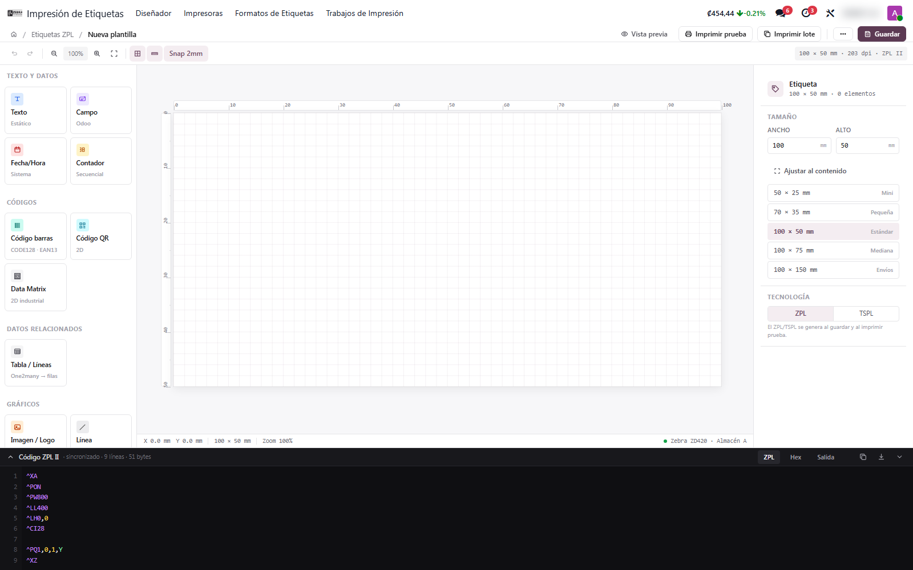
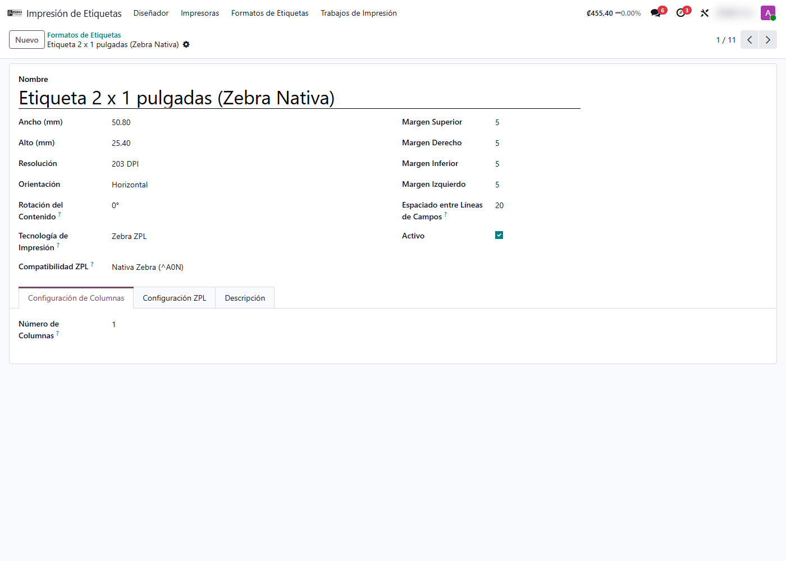
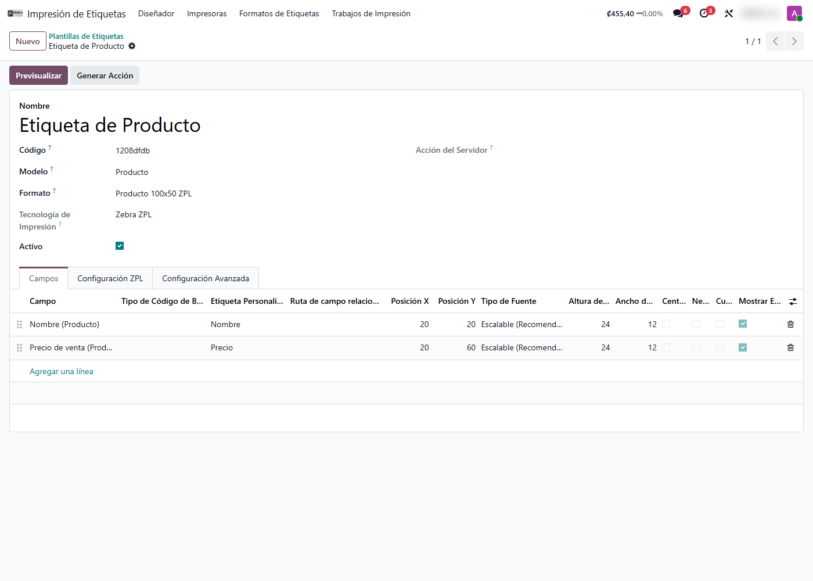
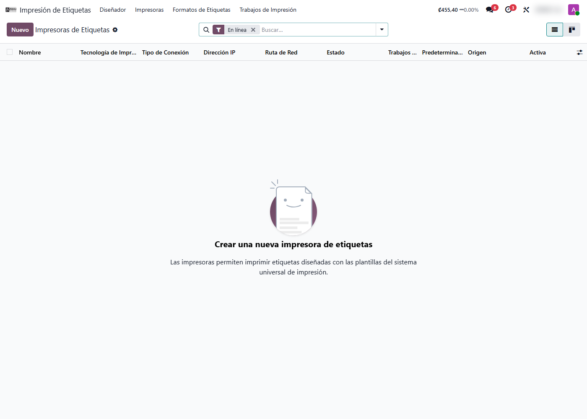

Impresión de Etiquetas Universal
Diseñá etiquetas para cualquier registro de Odoo con un editor visual de arrastrar y soltar, e imprimilas directo en impresoras térmicas Zebra, EPSON o TSC. Sin plantillas de Word, sin rediseñar por producto.
Capturas del proyecto
01 / 05




Imprimir etiquetas en Odoo suele ser rígido y depender de plantillas fijas
La mayoría de soluciones obligan a una etiqueta por modelo, con diseños cerrados que solo un técnico puede tocar, y a menudo pasan por un servidor de impresión central que se atasca.
Este módulo pone el diseño en manos del usuario: un editor visual estilo Figma donde se arrastran textos, campos del registro y códigos de barras sobre el lienzo, con impresión directa del navegador a la impresora térmica del puesto de trabajo.
Funcionalidades clave
-
Diseñador visual
Arrastrá y soltá elementos sobre el lienzo, con posiciones exactas en milímetros.
-
Códigos de barras
Code128, Code39, QR y DataMatrix enlazados a cualquier campo del registro.
-
Multi-tecnología
Zebra ZPL, EPSON ESC/POS, TSC TSPL y EPSON ESC/Label a color.
-
Impresión directa
Del navegador a la impresora del puesto, sin servidor central, en menos de un segundo.
-
Cualquier modelo
Productos, entregas, empleados, activos: la etiqueta se llena sola con datos reales.
-
Trazabilidad
Cada impresión queda registrada con estado, fecha y tiempo de proceso para auditoría.
Tecnología detrás del producto
¿Necesitás imprimir etiquetas sin depender de un técnico cada vez?
Adapto el diseñador y las impresoras a tu operación de bodega, retail o producción.